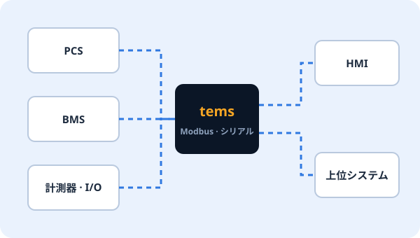
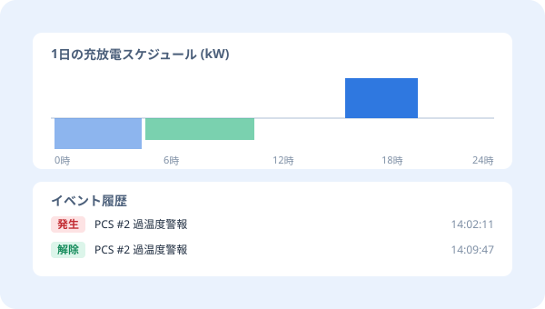
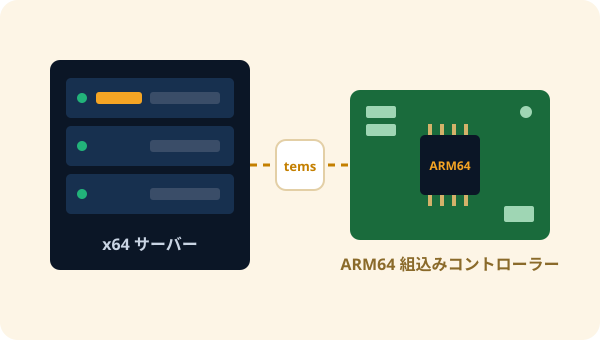

EMS ENGINE
tems
EMS サーバープラットフォームであり、PCS コントローラーエンジン。
現場機器と通信して設備を制御し、イベントと履歴を記録します。必要な機能だけを選んで構成するモジュール型なので、サーバーでも組込みコントローラーでも軽快に動作します。
app · 現場ごとの機能必要なものだけを選択
Modbus マスターModbus スレーブ時系列 DB への格納データ整理 · バックアップGPIOシミュレーター
core · 制御の中核機器 · データ · イベント
機器管理データ · スケジュールイベント · アラーム履歴資産HMI 連携時刻同期
base · 共通基盤全プロセス共通
オブジェクト · アラーム管理メッセージングタイマーノード状態
FEATURES
設備制御に必要なものをひとつのエンジンに
01
現場機器と直接通信
PCS、BMS、計測器などの現場機器をポイント単位で接続し、上位システムには機器と同じようにデータを提供します。
- Modbus マスター / スレーブ (TCP、シリアル)
- 機器 · ポイントのマッピングを設定ファイルで管理
- GPIO などコントローラーの入出力と連携

02
イベント · 履歴 · スケジュール
設備で起きたことを漏らさず記録し、決められたスケジュールどおりに運転します。
- イベント · アラームの発生と解除を記録
- 運転履歴の保存、時系列 DB (PostgreSQL) への高速格納
- 日単位の運転スケジュール · プロファイル
- 古いデータの自動整理 · バックアップ

03
モジュール型プロセス構成
機能ごとに独立したプロセスとして動作します。現場に必要な機能だけを有効にし、ひとつの機能の問題が設備制御全体に広がらないよう設計しています。
- プロセスごとの独立した設定ファイル · 共通の設定体系
- プロセス単位の起動 · 停止 · 再起動
- NTP 時刻同期で現場間の時刻を一致
現場ごとに異なる構成も簡単に
ESS、太陽光連携、PCS コントローラーなど、現場の特性に合わせて app 層を組み合わせます。
04
サーバーから組込みまで
同じエンジンを x64 Linux サーバーと ARM64 組込みコントローラーの両方で使います。PCS メーカーは自社コントローラーに tems をそのまま搭載できます。
- x64 Linux (Ubuntu) サーバー
- ARM64 組込み Linux コントローラー

SPEC
主な仕様
| 製品形態 | EMS サーバープラットフォーム / PCS コントローラーエンジン (ソフトウェア) |
|---|---|
| 実行環境 | x64 Linux サーバー、ARM64 組込み Linux |
| 機器通信 | Modbus マスター · スレーブ (TCP、シリアル)、GPIO |
| データ | イベント · アラーム、履歴、スケジュール、資産、時系列 DB (PostgreSQL) への格納 |
| 構成 | base · core · app の3層モジュール型プロセス、プロセスごとの設定ファイル |
| 運用 | NTP 時刻同期、データ整理 · バックアップ、tOps 連携によるリモート運用 |
詳細仕様や追加プロトコルへの対応は、現場の要件に応じてご相談ください。
PACKAGE
単体で、または tOps と一緒に
tems 単体
- 自社の運用体制がすでにある場合
- PCS メーカーのコントローラーエンジンとして搭載
- 現場の設備制御と記録に集中
tems + tOps おすすめ
- 複数現場の tems サーバーをひとつの画面で監視
- tems の設定を検証済みの画面からリモート編集
- プロセス再起動 · 配布 · バックアップを現場訪問なしで
tems の導入をご検討中ですか?
現場の構成と連携機器をお知らせいただければ、最適な構成をご提案します。すでに tems をお使いなら、tdoctor 無料トライアルのオフラインモードで tems の設定フォルダーをすぐに点検できます。